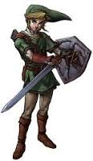

Link
I wield the triforce of courage and the master sword. I wear my iconic green tunic. I have an arch nemesis named Ganondorf who is always capturing the princess until I come busting in to save her. On my off days I enjoy breaking pots and enjoy hours of lawn mowing just to find some rupees. I normally do not talk but for the sake of my about me I typed.